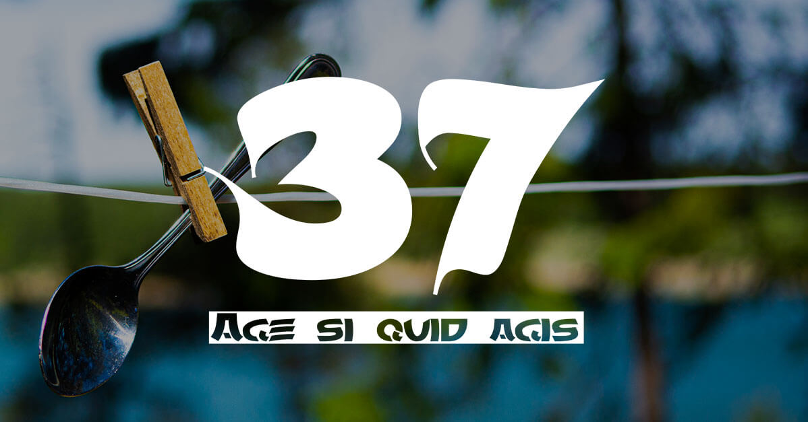
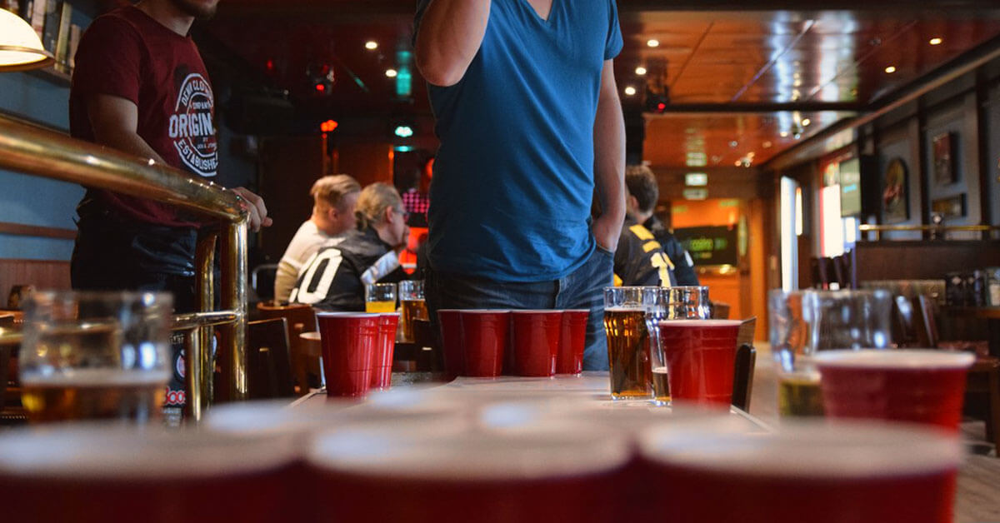
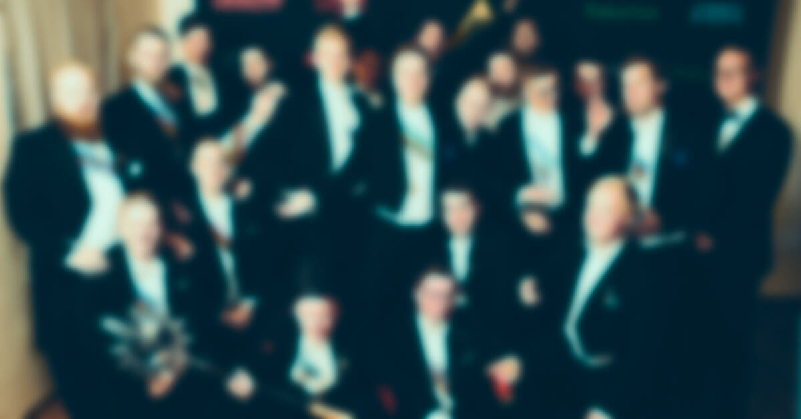

Yhdistys

Kolmeseiska ry on Turun yliopiston ylioppilaskunnan (TYY) alainen järjestö. Yhdistyksen tarkoituksena on
edistää Turun yliopiston ylioppilaskunnan ainejärjestöjen perinnetietoutta kouluttamalla ja perehdyttämällä
ylioppilaskunnan jäseniä turkulaisiin opiskelijaperinteisiin. Yhdistys myös pitää yllä opiskelijajärjestöjen
perinteisiin keskittyvää materiaalikokoelmaa. Toimintansa tukemiseksi yhdistys kerää jäseniltään jäsenmaksua,
jonka suuruuden yhdistyksen jäsenistö määrää syyskokouksessa.
Sosiaalinen media:
Tapahtumat

Järjestämme vuosittain useita tapahtumia niin omin voimin kuin myös muiden kumppaneiden kanssa.
Jos olet kiinnostunut yhteistyöstä ota meihin huoletta yhteyttä sähköpostitse
kolomeseiska
(a) gmail.com.
Tapahtumamme
- Jääräsitsit
- Perinnesitsit
- Teekkariristeily
- Jallunkierros
- Olutmaisteluita
- Jouluristeilyjatkot
- Kyykkätapahtumia ja -eksursioita
Lisää tapahtumista sekä toiminnastamme löydät sosiaalisen median kanavista
Toimijat

Toimijat 2020
Jäsenet tunnistat mustavalkoisista 37-pelipaidoista.
Hallituksen tavoitat parhaiten sähköpostitse kolomeseiska (a) gmail.com.